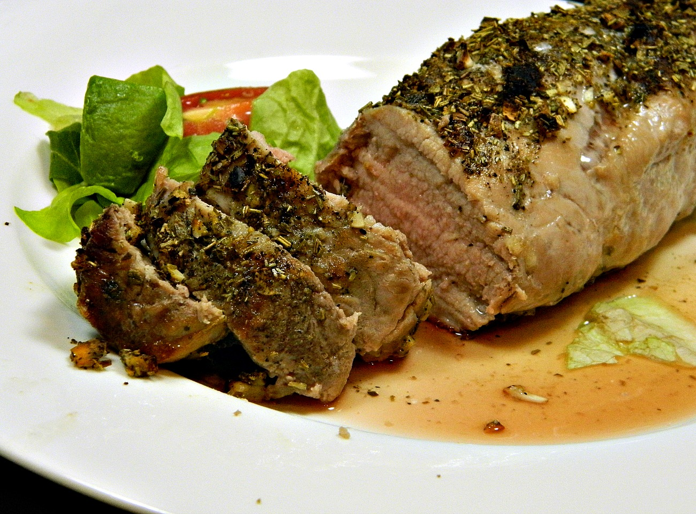

Tuscan Pork Tenderloin

Description:
This is a very easy weeknight pork tenderloin recipe that is also keto-friendly.
Ingredients:
- 4 teaspoons garlic, minced
- 2 teaspoons dried rosemary
- 2 teaspoons dried oregano
- 1 teaspoon salt
- 1 teaspoon ground black pepper
- 4 pounds pork tenderloin
Steps:
- Preheat oven to 425 degrees F (220 degrees C).
- Combine garlic, rosemary, oregano, salt, and pepper in a small bowl. Rub spice mixture all over the pork tenderloin. Place in a baking dish.
- Bake in the preheated oven until pork is slightly pink in the center, 20-25 minutes. An instant-read thermometer inserted into the center should read at least 145 degrees F (63 degrees C). Remove from oven and let stand for 5 minutes before slicing.